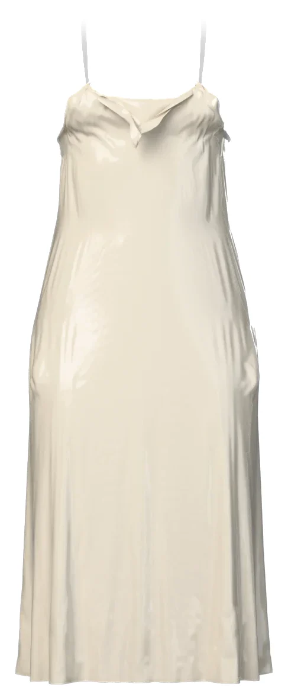
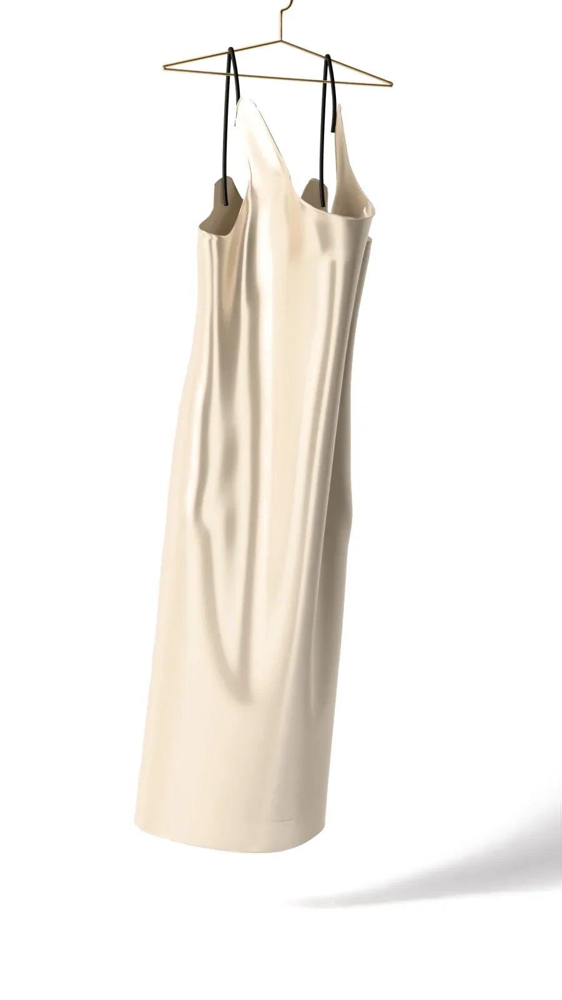
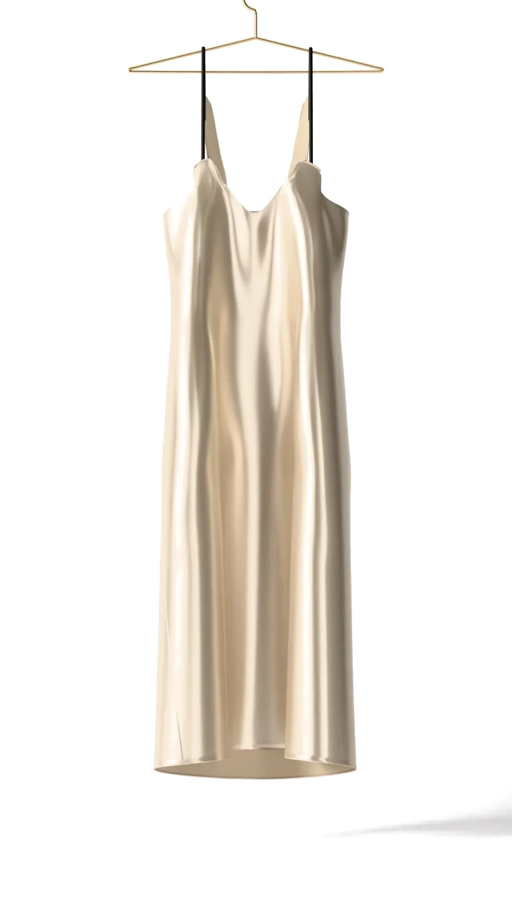

STAND-IN · img/alvor/front/master.* (departments/apparel/new-pieces-2026-11/build/silk-slip/site/silk_slip_front_16k.png; 16K, 8640 × 15360)

Chapter I · Outerwear
Alvor
Silk slip
Cream silk satin cut on the bias, falling to mid-calf on two thin black straps.
- SILK
- CREAM SATIN, BIAS CUT
- STRAPS
- BLACK SILK
- LENGTH
- MID-CALF
- SIZE
- XS · S · M · L · XL
Price on request
ReserveMade to order. Delivery date confirmed by email.
Delivered in the house box.
Details
- Made to order
- Made to order. We email your delivery date once production is confirmed. Cancel for a full refund any time before production starts.
- Returns
- Exchanges within 14 days of delivery, unused and with tags. Returns
- Care
- Dry clean. Steam on low from the inside; no direct iron on the satin. Keep out of strong light. Care
- Size
- The measurements
 STAND-IN · img/alvor/world/master.* (C11: the last frame, the world plate (the suite, at midnight); 8K, 5760 × 7680)
STAND-IN · img/alvor/world/master.* (C11: the last frame, the world plate (the suite, at midnight); 8K, 5760 × 7680)Where it is going · C11
The suite, at midnight
The lamp left on, the bed turned down on one side.
On the screen in the film, the picture is tomorrow: each piece in the place it is going, with one place kept for someone.
The maker’s notes
Alvor, the silk slip
- It begins as cream silk satin, cut on the bias.
- At the front, 16 cm is let out between the straps to fall as a cowl.
- The straps are black silk, 4 mm, set 8.8 cm either side of the centre.
- The back scoops low, below the shoulder blades, and the top edge is bound.
- It ends at mid-calf.
On it: no text and no logo.
Read the poem